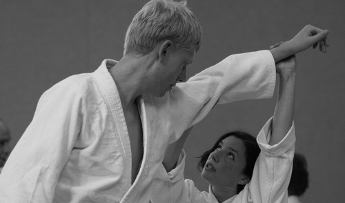
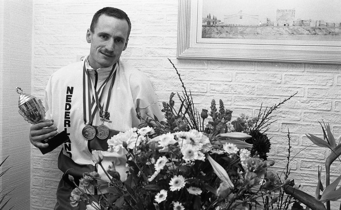

Introductiecursus Aikido bij AikidoStichtingArnhem Jiki Shin Kan.
Arnhem - Afgelopen maandag organiseerde Aikido Stichting Arnhem Jiki Shin Kan een gratis open les aikido. Tijdens die les konden geïnteresseerden een kijkje nemen in de wereld van deze Japanse krijgskunst. De les - onder leiding van hoofdinstructeur, Piet Lagerwaard (6e dan) - werd goed bezocht. En de deelnemers schreven zich na afloop bijna allemaal in voor de introductiecursus die op maandag 18 september a.s. van start gaat.
klik op de foto om meer te lezen.
Oud-wereldkampioen taekwondo John Cocu overleden
CUIJK - Tweevoudig wereldkampioen taekwondo, John Cocu, is gisterochtend op 56-jarige leeftijd als gevolg van hartproblemen overleden. De Cuijkenaar werd in 1987 en in 1988 wereldkampioen bij de International Taekwondo Federation.
klik op de foto om meer te lezen.
Japanse leraar op bezoek bij Aikido-school Niseikan
De Japanse leraar Katsuyuki Shimamoto is op bezoek geweest bij Aikido-school Niseikan. Shimamoto Shihan is een 8e dan Aikido-leraar en komt uit Osaka, Japan.
klik op de foto om meer te lezen.
Nieuw elan voor aikido in Ridderkerk
Aikidoleraar Eddy Nuijten heeft zich aangesloten bij de aikidoschool van de bekende Ridderkerker Pieter van Dongen. In het verleden hebben beide aikidoleraren al intensief samengewerkt en het doet Nuijten deugd dit weer op te pakken. "We zijn verschillende persoonlijkheden met eigen opvattingen over aikido. Om dan toch te kunnen samenwerken, ja, dat is het ultieme aikido. Respect voor elkaar ondanks alle tegenstellingen."
klik op de foto om meer te lezen.